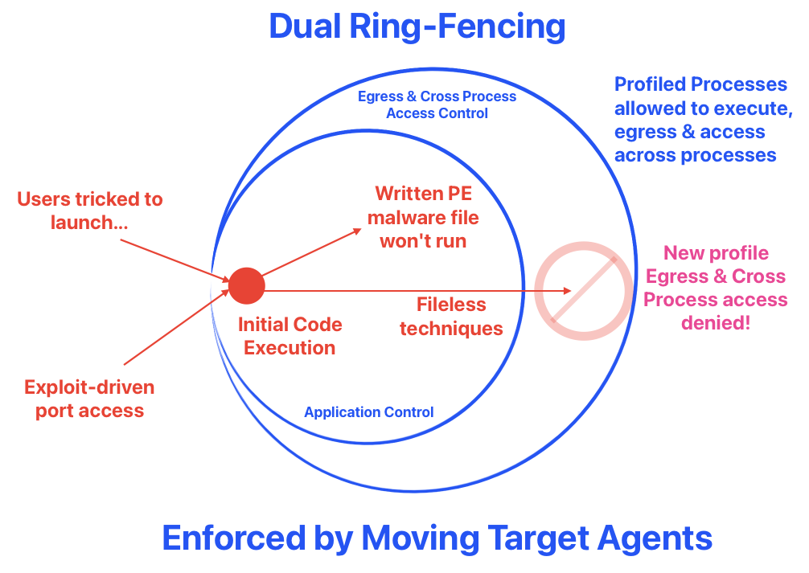

Code Execution - simple as 1, 2 and 3
How this model came to be...
Back then, I led a small Test & Evaluation team (around 201X). We were testing out different up-coming cyber security products, like EDR (e.g. Carbon Black), malware sandboxes (e.g. FireEye)... The keyword that always appeared when evaluating such products is MALWARE; the whole point of malicious software is to execute arbitrary codes.
We looked at various public malware repositories, public & commericial tools. As we reviewed the samples, we noticed some were PDFs, MS Office documents, and Active-Contents files that had embedded scripting.
Malicious Code-Execution is NOT restricted to compiled executables.
We noticed some patterns:
- A new PE file written to disk that wasn't in the target in the first place, then someone or something executes it...
- Content based but Non-PEs files that may run malicious scripting with PDF (javascript) or a MS Office document (vba) & various formats
- Run an exploit tool (like Eternal Blue exploit CVE-2022-46869) that triggers a vulnerable service for remote arbitrary code execution (e.g. shellcodes), which in turn runs 1 or 2 (e.g. cmd / powershell scripting)
As a team lead, I concluded & explained to my engineers that a pragmatic mental model has better operational utility than memorizing some malware taxonomy or attempt to enumerate all "bad" files or techniques under the sun...
The Three Types Model
Type 1: New File Execution
Write a new PE file to disk and execute it (the classic write-&-run "malware" approach).
Type 2: Living Off The Land
Abuse legitimate system tools and scripting (PowerShell, VBA, JavaScript) with (e.g. there's DLL but it never touch the disk, all in memory) or without new executables.
Type 3: Exploit-Driven
Exploit vulnerabilities for arbitrary code execution, which chains into Type 1 or 2. Exploits that gained marketing/marketable names like Log4Shell, EternalBlue, etc, are typically Type 3.
Key Insights
- Types 1 & 2 abuse OS features (can't be patched, but at best hardened).
- Type 3 exploits bugs (should be fixed with updates).
This model is not Windows specific... First two types are very reliable across different OS variants but Type 3 tend to be version specific.
There are finer aspects within this model beyond just Feature vs Bug:
- Fore vs Background launch
- Before vs After Logon session
- Egress & Cross-Process activities
- Privilege sequence
All of these aspects are related to analytics, but it really just boils down to how we ask forensical questions.
Fore vs background process
"Process" refers to the running memory instance of a program stored on disk.
- Most sneaky backdoors are background processes within user touch-points for obvious reasons.
- Most user-zone infiltrations tend to involve users' interactions or involvement e.g. email phishing.
- Server side infiltration however could be a chain of background processes, starting from a vulnerable listening process, triggered to download & run malicious codes.
- Beyond parent-child process relationship, there's analytical value in tracking the transition from foreground to background spawning e.g. a foreground MS Office process spawned a background powershell process.
- Play a role in discerning remote attack from insider actions for critical infrastructure environment, especially when we are able to track at both OS & secure KVM level (e.g. session recording).
This process attribute is unfortunately not native to Windows, unlike Linux (e.g. tty, SessionID) & MacOS that have fields in audit logs to infer whether it is a back/foreground process. We had to engineer it ourselves for Windows.
Before vs After Logon Session
Timing & sequence matter. For instance...
- A vulnerable server with Log4j listens on an exposed port, attacker sends it a payload that triggers a string of all background processes without anyone signing into the server...
- Windows Sticky Keys backdoor launches a SYSTEM cmd.exe before any valid user logon.
- A email phishing victim, can only be a victim after he or she logon & interacts with some malicious contents that seems normal but runs abnormal hidden processes...
We can contrast & visualize all that like this:
Cross-Process & Egress Activities
While (Fore vs Background) + (Before vs After Logon) can characterise a set of process sequence like payload delivery or exercising a backdoor, Cross-Process & Egress activities let us zoom into what's next for that sequence w.r.t TTP or Tactics (the boxes below, WHAT), Techniques (specific & numerous methods related to each box, HOW) & Procedures (WHEN to do WHAT as visualized in a graph):
- The red lines of Code-Execution to
Report to C2...&Internal Reconn.needs network access. - The orange lines tend to require access across process's memory, for instance the famous
Pass-the-Hashproblem in Windows such that offensive tools access LSASS.exe process memory to dump password hashes. - Many advanced in-memory techniques need cross-process access...
There are so many techniques & why just focus on this two activities?
- Initial Code-Execution tend to be multi-staged & network access is required.
- Even if it shifts towards the trend of hiding within images, legit content files etc, it will still have to call-back to C2.
- Most if not all advanced in-memory techniques require cross-process access, it's inevitable.
We will revisit these 3 points again in the last section.
Privilege Sequence
Mostly to spot privilege escalations...
Beyond Categorization
Use the mental model to evaluate threat reports & different types of technical controls or products.
We started analyzing controls w.r.t various offensive techniques grouped by these three Code-Execution types.
Defense Coverage Matrix
| Endpoint Controls | Type 1: Write New PE File to execute | Type 2: Living Off The Land | Type 3: Exploit-Driven |
|---|---|---|---|
| Anti-Virus (AV) | ⚠ Blocks known bad with signatures but malware mutation is free & voluminous | ✗ Weak (fileless, in-memory) | ✗ Useless (0-day exploits) |
| Application Control (default deny) | ✓ Blocks (allow-list) | ✗ Bypassed (DLL side-loading, scripting & legit commands abuses) | ✗ No protection |
| Driver-based EDR | ⚠ Monitors behavior (evaded by direct syscalls, unhooking) | ⚠ Disarmed by signed drivers, OS tools... | ⚠ Monitors behavior (partial visibility) |
| Ring-fencing with Moving-Target agents | ✓ Deny written PE (on disks) w/o easy loop-holes & tedium of allow-list management | ✓ Disrupts C2, payload delivery & lateral movement (e.g. fileless) | ✓ Disrupts C2, payload delivery & lateral movement |
Anti-Virus (Bad-listing)
The problems with traditional signature-based Anti-Virus...
- Mutating & evasions are essentially free thanks to numerous public repositories & tools.
- Updating signatures is a continuous process that many environments can't achieve (e.g. OT networks that are adverse to changes and updates).
- Not effective against Type 2 techniques.
- Totally useless against 0-day exploits (Type 3).
Contemporary antivirus companies mostly pivoted to behavior-based detection that identify threats based on actions and system modifications rather than relying solely on file signatures, enabling detection of fileless and non-PE attack vectors.
But the general approach still revolves around offensive behaviors & signatures. The next type of controls focuses on allow-listing...
App Control (Good-listing)
Application-Control in principle works well to deny Type 1 since malicious PE files are part of an potentially infinite set. But there are numerous loop-holes in practice...
- DLL checking is turned off as it is very resource intensive.
- Plenty of DLL loading methods which are mostly Type 2 methods to get around App Control reliably.
- Managing allowed-lists in certain environments can be challenging.
- Going file-less (using Type 2 or 3 techniques) can easily reuse malicious DLL but loading directly to memory without writing to disks
Microsoft's implementations are fragmented. Software Restriction Policy was officially deprecated in 2020 and completely stopped functioning in Windows 11 22H2 fresh installations, though upgraded systems retained limited functionality. Microsoft explicitly recommended transitioning to AppLocker or Windows Defender Application Control (WDAC) as replacements.
EDR (only as secure as Windows' inherent vulnerabilities)
EDR (along with all host controls) security is only as strong as Windows' inherent vulnerabilities allow:
- Type 1 malware can bypass monitoring hooks through direct syscalls, kernel callbacks evasion, and API unhooking.
- A recent example of Type 2 technique is
EDR-Freezedisclosed in September 2025 by security researcher TwoSevenOneThree (Zero Salarium) that suspends EDR and antivirus processes indefinitely by abusing Windows Error Reporting (WER) system components. - Type 3 methods like 0-day exploits (e.g. UEFI rootkit BlackLotus) may achieve execution before EDR or totally disarm EDR drivers.
When the EDR missed the malicious code that disabled it, that endpoint visibility/protection is mostly compromised. Attackers still get around anti-tampering mechanisms like Early Launch Anti-Malware (ELAM) and Kernel-Level protections, by abusing many vulnerable but signed drivers that are out there. Bear in mind that not all EDR solutions are ELAM certified.
This isn't about how well EDR detects threats. It's about how well the product stays useful despite the underlying OS flaws. This issue isn't unique to EDR, ALL Windows host controls are susceptible to attacks.
Adversaries are well funded to get hold of such products to figure out ways to disarm & evade.
Ring-fencing (Disrupt the vectors) + Moving-Target (Protect the product)
By breaking down Code-Execution into 3 simple bins, it helped us identify these factors:
- Most offensive codes tend to be packaged into compiled PE files, not coincidence that ransomware are mostly PEs.
- Compared to PEs, offensive scripts are easier to reverse engineer.
- Blocking PE files delivery is common, most corporate proxies can & will, even free email services do that.
- Type 2 techniques are reliable for getting more compiled codes into the target, despite the network layer controls mentioned above.
- Type 2 & 3 are also useful for server-side remote code execution (e.g. SQLi & Log4J exploits).
Most if not all INITIAL Code-Executions are based on some multi-staged that WILL eventually involve network & cross-process access.
Think of it as a multi-staged rocket launch. It may seem powerful but it is actually quite fragile. If one of the stages fails, the whole launch fails.
The last section further explains ring-fencing that disrupts malicious network & cross-process access.
How to Ring-Fence?

It is basically dual-layer barriers to disrupt attacks, but won't affect legimate processes. Let's use this 3-type model approach to divide & conquer the problem.
Type 1 denied by App Control:
- Malicious PE forms the bulk of the problem.
- Application Control is useful since it eliminates tracking of an infinite bad-list, BUT...
- how do we deal with loop-holes like DLL loading by Type 2 & 3 techniques?
- tedium of maintaining lists?
Two hygiene factors that are conducive to effective App Control, without maintaining allow-lists:
- Users should be in
Standard Usersfor your the bulk of users. - Minimize the total number of Local admins (or eliminate if possible) within your client-zones.
- Avoid deploying programs in user-writable folders & have executable files writable by
Standard Users.
When users can write/change those files, so can attacker's malicious processes, which tend to run in user's context during initial intrusion. When that happens:
- All files created by Standard Users' processes, are owned by the user/victim.
- Conversely, all centrally deployed files are typically owned by
SYSTEM,TrustedInstaller&Administrators Group. E.g. Programs that are installed inC:\Program Files...
The exception to default file-ownership behavior is under certain UAC setting for Local Admin & Domain Admin, where written files are immediately owned by Administrators Group.
This simple file ownership distinction can deny ALL written PE files written under non-privileged context, including DLL loading techniques because a non-privileged user-process cannot change file ownership to
SYSTEM,TrustedInstallerorAdministrators Group.
It is therefore possible to achieve low cost & effort Application Control, simply with native NTFS ACLs. I covered in detail with my ETW series here. That sharing also includes C# source codes to explain how file-ownership control can be enforced.
Type 2 & 3 disrupted by granular process profiling:
We know that chasing "bad" or offensive techniques is a challenge since it is an infinite set like the one shown on the right of the figure:
We also know that the set of network & cross-process accessing processes are always finite in any endpoints. The intersection of such process that can be either abused or exploited is even smaller. This may look too abstract, let's look at a real world concrete example:
This is one of those hide-and-seek games that criminals employ to abuse GitHub as a C2 center. When law enforcement takes down a specific GitHub repository, attackers quickly set up another one. Let's focus on the green box; no matter which repository that is hosting, this is the point where a victim clicks the LNK file that triggers the download of MSHTA.exe, which then downloads more files.
Using granular process profiling, we can effectively isolate the network and cross-process access by disrupting the new process profile that deviates from our baseline.
The basic host firewall rules are not enough because they usually only look at the destination or the program path. In this case, MSHTA.exe is a native system program. There are many other system programs that we might not want to block network access. By using the ideas from Application Control, we can create a detailed profile of the processes that are leaving the network and accessing memory across different processes.
My ETW series delves deeper into this topic and provides code-level explanations of how we can achieve this granular profiling.
What is Moving-Target & Why it matters?
Remember the CrowdStrike incident? A single mistake with a specific low-level resource file consumed by a kernel driver caused almost a global outage.
While causing an outage that is hard to recover may not be beneficial for criminals at large, abusing Windows' inherent weaknesses by exploiting vulnerable drivers to disable EDR, AV, or App Control can be quite useful. This phenomenon is known as Bring-Your-Own-Vulnerable Driver (BYOVD).
In the past, there were some barrier to entry for such disabling of host control as it still required some skills. But it has now become commoditized & accessible to low to mid skilled criminals.
The core issue is that most products are very static in nature & waiting to be tampered. Despite some anti-tampering, the underlying OS is still vulnerable to attacks.
Moving-Target agents adopt a fight fire with fire approach, by ditching traditional kernel drivers for light weight portable agents that are unique per deployment. Doing so realise the favorable characteristics stated in the last row of the earlier Defensive Coverage Matrix.
The benefits of Ring-fencing with Moving Target agents are:
- Long term defensive value suitable for protecting critical infrastructure assets that are adverse to constant driver or related signatures updates.
- Disrupts new malware & initial intrusion callbacks to C2 & lateral movement without upkeeping of signatures.
- Even under detect-only mode, it has much better signal-to-noise ratio than conventional detection engineering that usually ends up costly & noisy.
Why there's still security by obscurity?
While moving-target host agents may appear to rely on security by obscurity, they actually gain defensive strength from unpredictability. Most commercial off-the-shelf (COTS) endpoint products expose static attack surfaces—unchanging drivers, predictable configurations, and stable process behaviors—that adversaries can study and exploit over time.
By contrast, moving-target agents shift these parameters dynamically, denying attackers a fixed point of reference. Kerckhoffs’s principle applies to cryptographic systems, not to adaptive defensive architectures; misapplying it here overlooks the practical longevity that controlled uncertainty can provide in real-world defense.
There are already more host controls that are based on Ring-Fencing approaches, hopefully we can see more that cannot be easily disarmed by abusing Windows inherent weaknesses.